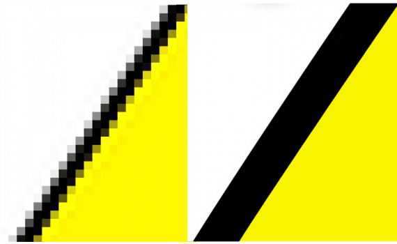

Vektorová grafika

Vektorovı obrázek se neskládá z jednotlivıch bodù, ale z
velkého mno�ství objektù, které jsou urèeny matematickım
popisem (rovnicemi, vzorci nebo funkcemi).
Základním pojmem vektorové grafiky je køivka. Ka�dı obrázek
je slo�en z nìkolika køivek (vektorù), resp. objektù, které tyto
køivky vytváøejí.
Další objekty vektorové grafiky mohou bıt texty i rastrové
obrázky.
Vıhody
Obrázky lze libovolnì zmenšovat i zvìtšovat, ani� by docházelo ke ztrátì kvality.
Obrázek je ménì nároènı na zdroje, jeliko� velikost obrázkù je menší ne� u rastrové grafiky.
S ka�dım jednotlivım objektem vektorové grafiky lze pracovat oddìlenì.
Neıhody
Poøízení a editace vektorového obrázku je obtí�nìjší.
Pro prohlí�ení obrázkù je potøeba speciální vektorovı grafickı program.
U slo�itıch grafickıch objektù mù�e bıt vektorová grafika nároènìjší na operaèní pamì� a procesor.